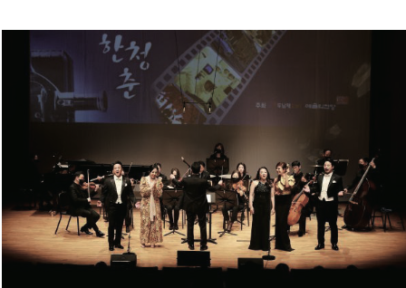
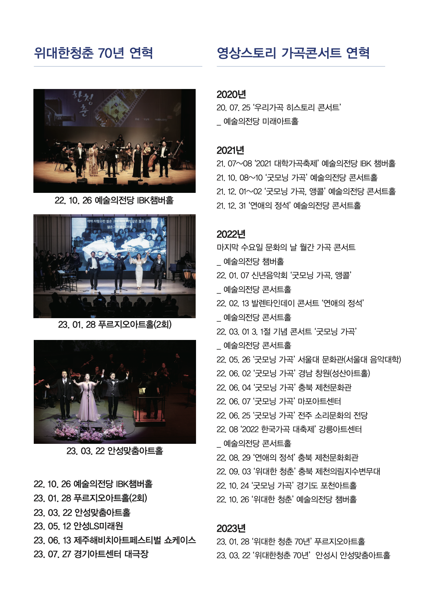
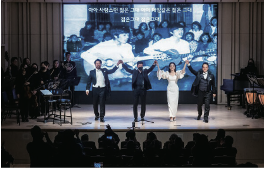
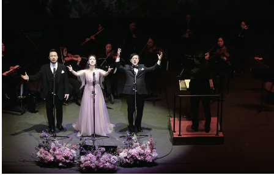

위대한 청춘
2022-2023
작품 프리뷰 스트립
첫 번째 작품으로 ‘위대한 청춘’을 넣어두었고, 나머지 두 카드는 다음 작품 소스를 받았을 때 그대로 교체할 수 있는 비어 있는 자리로 남겨두었습니다.

2022-2023
추가 예정
추가 예정
대표 작품 상세
공연의 메시지와 형식을 먼저 읽고, 오른쪽 연혁 보드로 실제 무대의 흐름을 한눈에 확인할 수 있도록 구성했습니다.

등록된 첫 작품
‘위대한 청춘’은 지난 세대가 걸어온 산업화와 민주화의 시간을 영상과 노래로 되돌아보며 한국인으로서의 자부심과 긍지를 회복하도록 돕는 데 첫 번째 목적을 둡니다. 동시에 자녀 세대가 부모와 조부모 세대의 고생과 역사를 함께 감상하며 가족애를 회복하고, 한국 근현대사를 감각적으로 다시 배우도록 이끄는 공연입니다.
전체 공연 연혁 보기추가 이미지 스트립
제공된 연혁 이미지에서 공연 컷을 분리해 세 장의 스틸로 정리했습니다. 이후 작품도 같은 방식으로 무대 컷이나 포스터를 추가하면 됩니다.


홍보영상 / 기사
주신 실제 링크를 반영했습니다. 홍보영상과 기사 원문으로 바로 이동할 수 있게 정리해 두었고, 이후 새로운 보도가 생기면 같은 형식으로 항목만 추가하면 됩니다.